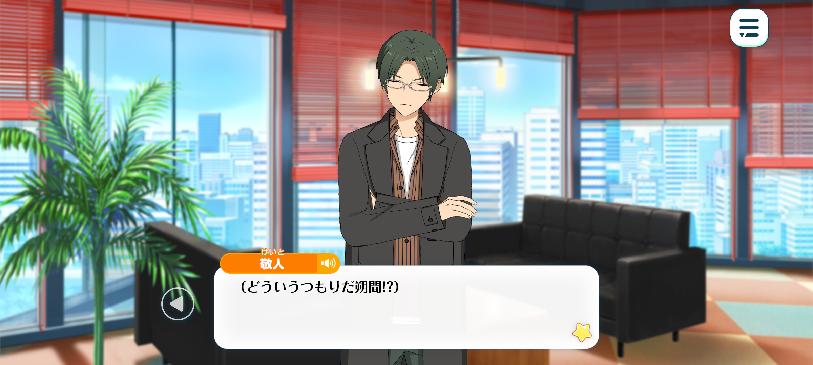
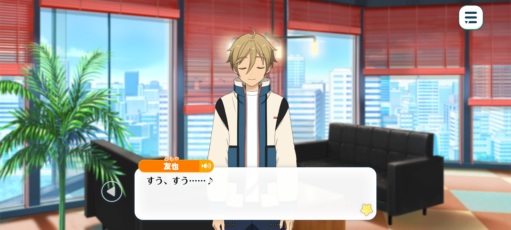

BIOHAZARD — Chapter 12



Keito: (What are you playing at, Sakuma?!)
(“I'll be away for a while, so while I'm gone, I want you to handle anything that comes up at the office.” ? ...The nerve of him, asking me something like that so casually! And at a time like this, no less!)
(...Ever since we filmed Vampire Shogun, Sakuma has been acting awfully familiar with me.)
(Does he seriously think that working together on a single job makes up for all the outrageous things he's done? That it's somehow brought us close enough to go back to being ‘the best of childhood friends’?)
(If he thinks that sort of naïveté will work on someone like me, who's already beyond saving... He's got another thing coming. Honestly, the very idea is insulting.)
(...Well, it's not as though I wouldn't have taken care of things at the office anyway, even if Sakuma hadn't specifically asked me to.)
(UNDEAD seems to be having a rather rough time lately, while Ra*bits has apparently gotten caught up in some sort of trouble after one of the higher-ups picked a fight with them...)
(Of Rhythm Link's younger units, we're undoubtedly the ones with the most momentum right now. We, AKATSUKI, are in a relatively good position.)
(Of course, we have our own difficulties to deal with, but at least on the surface...)
(And so, we'll take the lead in securing a place for Rhythm Link's younger members within this long-established agency.)
(To that end, I'll make a point of visiting the office regularly and paying my respects to the higher-ups!)
(I'll gladly take care of errands and handle all the little tasks our seniors need help with!)
(There's currently a deep rift between Rhythm Link's higher-ups and its younger members. I'll do whatever I can to bridge that divide, so that everyone at the agency can stand together and face the challenges of this new era!)

Tomoya: Zzz, zzzz… ♪
Keito: …!? Mashiro? Why are you sleeping here on the sofa?
That was dangerous… I almost sat on you. I could have crushed you.
Tomoya: Mmnhnnn…. H-hng? Where, am I?
Keito: Did I wake you…? Good morning, Mashiro.
Tomoya: Waah!? Aaa, g-g-good morning Hasumi-senpai!
Keito: Hmm. At least you remembered to greet me properly.
More importantly, what are you doing sleeping here of all places?
Tomoya: Ah, um, I’m sorry… As you probably know, things have been rather hectic for us lately.
We haven't been getting many opportunities to work, so I've been reaching out to people in all sorts of places, trying to find a way to change that...
I've been on my feet all day, and I suppose I was so exhausted that I accidentally dozed off.
Keito: What are you, a stray kitten? If you're going to sleep, at least go back to your room at Seisoukan. You need to rest in a proper bed, or you'll end up hurting yourself.
Tomoya: I know... But this is an important time for us, so I want to do everything I can.
Keito: Is there anything I can do to help?
Tomoya: Ah, yes! Actually, there is something I'd like to ask you about. There's something I'd like to try using that SSVRS we discussed...
But, um... UNDEAD are using it at the moment, so I'm not sure whether there's enough equipment available for us right now...
Keito: What? UNDEAD are using it?
Tomoya: Yes. That's what the person in charge told me when I submitted my request to use the equipment.
Keito: They're supposed to be away right now, taking part in some sort of secret plan. No... Could it be that they're using the SSVRS equipment for this so-called plan?
Tomoya: Huh? I'm not sure what plan you're talking about, but surely UNDEAD aren't away, are they?
They're supposed to be appearing on a special live broadcast today.
Keito: A special broadcast? Is that this so-called secret plan? You're still remarkably well-informed about what the other units are up to, aren't you?
Tomoya: Ahaha. I suppose you could say that's one of my strong points! You know what they say: if you love something, you naturally become good at it. Though lately, that Shiratori seems to be taking over my position as the resident idol fanatic.
Ah, look! It's starting right now. An emergency special broadcast: ‘An Important Announcement from UNDEAD’...
Keito: Emergency broadcast? Are they disbanding?
Tomoya: Well, UNDEAD are pretty popular, all things considered. I don't think they'd disband.
Hmm? But... There's something strange about what they're saying, isn't there?
Keito: What is it? Let me see.
Tomoya: Could you look at it on your own phone, please~...?
Keito: Fine. …Hm, what is this? What are they wearing?
What song are they singing...? Is that their debut song?
No, it was a slightly different one. This was one of several songs they'd considered for their debut, back when they were preparing for their first UNDEAD live performance...
But for various reasons, they ended up never performing it.
Tomoya: You really do know a lot about them, Hasumi-senpai. Are you an UNDEAD fan, too?
Keito: Hmph. I've had quite a history with those guys ever since they formed. No, even before that.
But why would they dig up a song from their early days? It's so old that hardly anyone would even remember it.
Are they trying to return to their roots? It's true they've seemed a little directionless lately, so perhaps going back to their original ideals wouldn't be such a bad idea.
HELLSING, is it? As in Van Helsing, the famous vampire hunter...? No, that can't be right. The spelling would be different, wouldn't it?
‘Hell’, as in the underworld, and ‘sing’ as in, to sing.
How ominous. What on earth are those guys up to this time...?